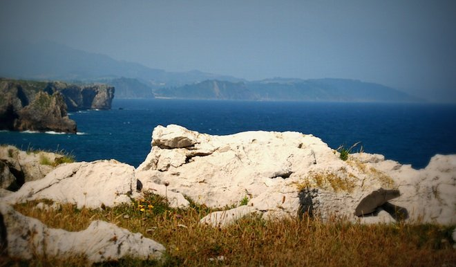

Como se sabe, hay una novela con este mismo nombre, que fue escrita y publicada mucho después de este cuento, que fue uno de los primeros.
Ya lo he contado en otras ocasiones. El personaje de Elena fue tan poderoso, y me resultó tan intenso imaginar el mundo desde la perspectiva de una mujer, que este cuento siguió vibrando durante años, en los que consideré escribir una novela. No sucedió así. Pasado el tiempo, este relato dio origen a un poema con el mismo desarrollo, escrito como un experimento narrativo. Y, con los años, el cuento y el poema se fundieron en otra experiencia metaliteraria, un libro que obtuvo el premio Gran Angular de SM…
Lo que significa que los laberintos de la literatura son impredecibles…
Yo sigo, después de tantos años, orgulloso de esta primera Elena…

CUANDO CANTARON LOS PRIMEROS GALLOS, Elena llevaba ya rato observando la lechosa claridad del alba, que se colaba en la habitación por las contraventanas abiertas. Había dormido con todos los sentidos pendientes del amanecer de ese día aborrecible, señalado en el calendario desde dos semanas atrás. Si fuera por ella, no se levantaría nunca más, pero hacía tiempo que no vivía por sí misma. Iría a la capital otra vez, aunque quizá hoy ya no la dejaran regresar.
El vaho de los cristales revelaba el frío de la mañana. Sobre el vaivén incansable de las olas pudo colgar otros ruidos familiares del despertar en la aldea: el acero de los carros sobre las chinas de la calle, los perezosos esquilones de las vacas, el maullido de los gatos en los tejados de pizarra… A su alrededor, en la matizada oscuridad, distinguió las siluetas de la percha, la cómoda, la silla desvencijada y el esqueleto de la lámpara en el techo. Sintió aprensión al observar los barrotes a los pies de su cama.
Apartó las mantas y se incorporó. Tanteó con los pies hasta encontrar las alpargatas y tomó la toquilla de la percha. Se la echó por los hombros y salió hacia la cocina. A medida que se acercaba notó el calor del fogón. Retiró con el gancho algunos aros de la placa y comprobó que aún quedaban brasas. Llenó el badil, echó una carga de carbón, abrió el tiro y colocó de nuevo las arandelas. Destapó el depósito del agua y vertió el agua tibia en la palangana, que llevó al baño.
Dejó la palangana en el soporte, levantó la pesada tapa del váter y se sentó. Pudo notar el espeso olor de la orina y la calidez del líquido entre sus muslos. Luego se lavó las manos y la cara y se quitó el camisón. Humedeció en el agua una punta de la toalla y la pasó por las mediaslunas de debajo de sus pechos, los valles de sus axilas y el monte poblado de su pubis. Deseaba que nadie pudiera percibir su olor de hembra insatisfecha.
De pie, sólo podía ver su rostro en el pequeño espejo. Su cuerpo ya no tenía la tersura de años pasados, pero aún se podía considerar atractiva. Su piel era morena, y eran negros, absolutamente negros tanto sus cabellos como el vello de su vientre. Sus manos y su cara estaban endurecidas por el viento, el frío y la sal. Sus músculos eran recios, acostumbrados al trabajo físico, torneados por el esfuerzo.
Pero nada de esto pensaba mientras se peinaba frente al espejo. Su mirada era fría y no pensaba en nada mientras contemplaba maquinalmente su rostro y el movimiento del peine. Se recogió el cabello con un pasador y sujetó algunos mechones salvajes sobre las sienes, aferrándolos con horquillas. Cuando acabó su aseo, vació el agua en la taza, tomó el camisón y se cubrió con la toquilla. Regresó tiritando a la habitación.
La noche anterior había preparado sus mejores prendas: aparte de su ropa interior, una falda de cuadros, tableada, una blusa cerrada hasta el cuello, una rebeca y, en la percha, el abrigo. A excepción de su blusa, blanca, el resto de sus vestidos eran tan grises como esa hora del amanecer. Ya vestida, buscó en un cajón de la cómoda y sacó un juego de medias negras y unas ligas, ambas por estrenar. Abrió el paquete de medias y las miró al trasluz, comprobando su suavidad. Luego, las enrolló y se las calzó estirándolas bien para que no quedaran arrugas. Se colocó las ligas y dio una vuelta al extremo de las medias. Por último, buscó su único par de zapatos, quitó los papeles de su interior y se los puso. No ordenó la habitación.
A la cocina llegaba ya la luz acaramelada del sol que despuntaba por las montañas. No quiso prender la luz eléctrica para protegerse en la penumbra de la agresión de los recuerdos. Con la destreza que da la costumbre, se dirigió a la oscura alacena y tanteó hasta encontrar la lechera. Vertió leche en el cazo y lo depositó sobre los hierros de la placa. Colocó también sobre el fuego un pocillo con una mezcla de café y achicoria. Echó sobre el tazón unas rebanadas de pan de hogaza y esperó a que la leche y el café se calentaran. Desayunó despacio. Su mirada seguía los movimientos de la cuchara y su vista apenas se levantó del tazón. Se había acostumbrado a mirar el vacío, protegiéndose de sus pensamientos.
Recogió los cacharros y los dejó en la pila. Decidió no fregar para no mancharse la ropa. Regresó al baño y tomó una polvera metálica. La abrió y frotó su rostro con la almohadilla; luego, se pintó los labios marcando las carnosas curvas. Se dirigió de nuevo a la habitación y buscó unos pendientes de azabache y plata, que se colgó comprobando en dos ocasiones que el broche quedara ajustado. Dio cuerda al reloj dorado, de correa flexible, y se lo colocó en la muñeca. Se puso el abrigo, acomodó en el bolso un fajo de papeles amarillentos y se dirigió a la salida. Tomó la llave que estaba colgada de un clavo y abrió la puerta. Echó una mirada de despedida a la casa y cerró sin echar la llave, que guardó en el bolsillo.
La mañana era gélida. Había helado y de los tejados pendían delicados carámbanos. Notó el cuchillo de la brisa y el salobre olor del mar cercano. Nada más salir a la calle, irguió su cuerpo. Miró a los lados y sólo vio un par de gatos hambrientos. Caminó calle arriba, en dirección a la parada del autobús. En el trayecto se cruzó con varias personas. Éstas la miraron a ella, pero ella no les dirigió la mirada. Por supuesto, no hubo saludos.
El coche paraba junto a la cruz de piedra, a la entrada del pueblo. Elena esperó tiritando, sin pensar en protegerse del frío en el zaguán que los viajeros utilizaban para custodiar sus equipajes y donde los conductores dejaban a veces paquetes o recados. Unos minutos más tarde apareció el autocar. Avanzó unos pasos, hasta el borde del camino, y esperó a que el coche se detuviera.
El ruidoso vehículo comenzó a frenar muchos metros antes y se detuvo a poca distancia de la mujer. El cobrador bajó del autocar y saludó a Elena:
– Buenos días, señora.
– Buenos días.
– ¿No lleva equipaje?
– No.
Al subir percibió el calor denso de la calefacción de gasoil y el áspero olor de los pasajeros. A la voz de “¡Vámonos!”, el conductor arrancó el coche, que renqueó al principio y dejó de crujir al rato, al ganar velocidad. La mujer se tambaleó mientras se dirigía a los asientos, y encontró un lugar de ventanilla, en la cuarta fila. El cobrador, vestido con un raído uniforme azul marino, avanzó por el pasillo y al llegar a su altura la mujer pidió un billete para la capital. El hombre sacó del bolsillo de la chaqueta un lápiz y un talonario. Escribió el resguardo y pidió: “Dos cincuenta.” Elena pagó y durante la media hora que duró su viaje miró por la ventanilla, siempre al horizonte, el punto más lejano que pudieran ver sus ojos.
Durante un tiempo, el coche siguió la línea del mar, serpenteando por senderos estrechos que comunicaban los pueblos de costa. Elena, con el rostro pegado al cristal, veía cantiles de fondos vertiginosos y pensaba sin emoción que no le importaría que el autocar se precipitara hasta el abismo, allí donde el agua martilleaba sin tregua hasta convertir en guijarros los inmensos canchales. El camino se hizo menos abrupto cuando desapareció la línea de costa y el coche se dirigió hacia el interior, bordeando el cauce del río y atravesando bosques de chopos, alisos y salgueras, salpicados por la desnudez otoñal de pequeñas selvas de fresnos, castaños o avellanos.
El conductor hizo varias paradas antes de llegar a la capital, en las que subieron y bajaron pasajeros que la mujer no miró a la cara. Al llegar a su destino, en la plaza cercana a la estación de tren, todos descendieron y algunos esperaron a que los empleados descargaran sus equipajes. Nada más pisar el suelo, Elena tomó conciencia de la distancia a su aldea y percibió olores diferentes, colores distintos, caras desconocidas. Había agitación en las calles, a pesar de que era temprano. Se veían coches, motocarros, camiones, personas que empujaban carritos o portaban pesados fardos. Era un universo distinto del suyo y el ajetreo resultaba relajante porque entre el bullicio no era sino una desconocida. Se irguió, comprobó que la falda estaba estirada y echó a andar cruzando la plaza, en dirección a un edificio con una bandera y unas letras metálicas, clavadas en la fachada, en las que se podía leer: “Juzgados”.
Consultó su reloj: las diez menos veinte. Su cita era quince minutos más tarde. Tenía tiempo suficiente y buscó un bar. Sentada en un taburete, apoyada en la barra, sintió cómo los hombres la miraban, pero ella no los miró. Solicitó un café solo, café de verdad, y un vaso de agua. Todo era triste. El mostrador de madera se extendía de lado a lado del bar, y la media docena de tazas desportilladas revelaban una penuria antigua. El oscuro, casi negro barniz de las mesas ocultaba una escandalosa vejez. Los recortes de prensa en las paredes y un retrato con el cristal picado por leves cagadas de moscas mostraban las huellas de la derrota. Pero sobre todo eran tristes las conversaciones, apenas un murmullo sobre la agitación de la calle. Amargo escenario para unos tiempos tristes, pensó. Pagó y salió notando cómo algunas miradas la seguían, aunque ella no volvió la cabeza.
Regresó a los juzgados y subió las escaleras. Se quedó a un lado, fuera de la corriente de personas, casi todas hombres, que entraban o salían. Allí, con el bolso en las manos, contempló la callada agitación. Era como ver una película muda, pero sin gracia. Sobre el gris sucio de los adoquines, unas figuras, grises o negras también, iban y venían con prisa de un lado a otro. Se oían ruidos, apenas voces.
Minutos después, un rostro masculino conocido se dirigió a ella. Se saludaron fríamente; él la tomó del brazo y entraron en el edificio. El hombre se movía con destreza en aquel laberinto preguntando a los ujieres, subiendo escaleras y atravesando pasillos. Ella le seguía dócil, sin decir palabra, un poco atemorizada por los uniformes de guardias y conserjes. Cuando el hombre pareció encontrar el lugar buscado, señaló un banco de madera, en un largo pasillo. Él intentó una conversación:
– ¿Está usted tranquila?
– Sí.
– Hoy es posible que nos den el veredicto. He intentado conocerlo, pero no he podido convencer al secretario.
– Por mí no se preocupe.
– De todas formas, todavía podemos presentar un recurso al Gobierno Civil.
– Como quiera.
– Yo he hecho todo lo que he podido.
– Ya lo sé, gracias.
Como otras veces, el hombre se sentía violento con el obstinado silencio de la mujer. Era su abogado de oficio y no había conseguido en ningún momento romper la impenetrable barrera que ella había construído a su alrededor. Pese a sus esfuerzos, no había logrado de la mujer ningún otro dato que no estuviera contenido en la investigación oficial. Desistió de su intento, sacó de su cartera un montón de papeles y se puso a consultarlos.
Elena contempló el largo pasillo, las oscuras puertas, el suelo desgastado, el techo sucio… Intentaba, sin mirarlos directamente, ver los rostros que había a su alrededor. En otros bancos se podían contemplar escenas como la que ella protagonizaba: un hombre, bien vestido, asistiendo a otras personas. Casi siempre, el hombre elegante acompañaba a un varón; aunque al final del pasillo, se veía a otro abogado junto a una mujer con un niño.
Frente a ella, podía leer un cartel: “Sala de Juzgados. Tribunal número 3.” Esperaba, como otras veces, la llamada de un ujier que saldría gritando su nombre: “Elena Gabeiro”. Entonces, ella y el abogado pasarían a la sala. Consultó de reojo la hora, procurando que su mirada no coincidiera con la del hombre sentado a su izquierda. Eran las diez y cuarto. A veces, lo sabía, tenía que esperar mucho más tiempo.
Gritaron su nombre a las once menos cinco. Ambos pasaron a la sala, precedidos por un conserje que no les dirigió la mirada. La habitación era alargada, con bancos corridos, situados dejando un pasillo central, y recordaba la capilla de una vieja iglesia. Al fondo, una gran mesa ocupaba casi la pared y a sus lados había otras dos más pequeñas, una de las cuales estaba ocupada por un hombre apenas visible tras montañas de carpetas.
Elena y su acompañante se sentaron en el primer banco. La sala, de techos altísimos, estaba helada. A la sensación de frío contribuían otros elementos atemorizadores: el retrato del Odiado, a la cabecera de la sala, sobre un enorme crucifijo; las angostas ventanas, que dejaban entrar una luz mortecina, sólo aplacada por unas anémicas bombillas; la oscuridad y severidad de los muebles oficiales; el opresivo silencio en que ella trataba de disimular el vergonzante castañeteo de sus dientes… Elena conocía ambientes similares y todas las veces tenía una sensación de helor que no sentía siquiera cuando, en el amanecer invernal, salía al puerto a recibir a su hombre.
Minutos más tarde, otro conserje apareció por la puerta del fondo, disimulada en la pared cubierta de madera. Como si intentara acallar las voces de una multitud, gritó: “¡El señor Juez!”, que resonó en la sala como un estridente disparo. Elena y su abogado se levantaron, así como el hombre sentado en la mesa. Segundos después entraron, uno a uno, cuatro hombres vestidos con togas negras.
Cuando los recién llegados ocuparon sus asientos, se sentaron primero el funcionario y después Elena y su abogado. Los cuatro hombres hablaron entre sí y, al poco, uno hizo un gesto al secretario, que se levantó a recoger varios papeles. De regreso a su mesa, encendió un pequeño flexo y casi oculto tras las carpetas, con voz cansina, comenzó a leer:
“En Oviedo, a veintidós de febrero de mil novecientos cuarenta y nueve, en el año decimotercero del Glorioso Alzamiento Nacional, se da lectura a la causa seguida contra doña Elena Gabeiro Muñoz, natural de Ortigueira, provincia de Asturias, casada con don Pablo Cabañas Fernández, de treinta y dos años de edad, hija de Martín y de Emilia,nacido y residente en Navia, provincia de Asturias. Se sigue esta causa en el Juzgado número tres de la provincia, siendo Juez el Ilustrísimo Señor Luis Casanova de Rica, acompañado por los señores togados Don Marcial Estévez, Don Mariano Santacruz y Don José María del Valle. Este tribunal, constituído de acuerdo con las los Principios Fundamentales del Glorioso Movimiento, acusa a la mencionada Elena Gabeiro del delito de parricidio en la persona de su esposo don Pablo Cabañas, realizado según los indicios en las noches comprendidas entre el catorce y el quince de septiembre de mil novecientos cuarenta y ocho, considerando probado… “
Elena conocía el informe inicial, que había escuchado tres veces. El secretario leía mientras los jueces parecían dormitar y, ocasionalmente, se consultaban o simulaban examinar papeles. Su abogado permanecía en silencio y, como sabía, sólo hablaría en caso de que algún juez le preguntara. No se había quitado el abrigo pero se sentía desnuda ante los cuatro hombres. Ellos parecían saberlo todo de ella, y ella no sabía nada de ellos. Nunca le habían dirigido la palabra. Sólo el secretario y, por supuesto, su abogado, le habían hablado directamente. Pero no le importaba. Elena pensaba que eran tristes, muy tristes, esos tiempos en los que nadie se miraba a la cara.
“El informe considera probado que Elena Gabeiro y Pablo Cabañas habían mantenido una relación ilícita antes de formalizar matrimonio, el 17 de septiembre de 1939.”
Era cierto, pensaba. Los dos se conocían de niños. Desde joven, había admirado muchas cosas en Pablo, que era cinco años mayor que Elena. Ella no había ido nunca a la escuela. Como única chica de la familia, se había ocupado de cuidar las vacas y de ayudar en las faenas de casa. Cuando comenzó a desvelar el mundo, a los catorce años, descubrió en Pablo a un muchacho fuerte, que comenzó a trabajar como ayudante en una pequeña imprenta de Navia. Primero, haciendo recados; luego, como auxiliar del tipógrafo y más adelante como tipógrafo. Por sus dedos habían pasado cientos de libros y, de todos ellos, Pablo se había quedado algo. Aunque los que más le interesaron siempre eran esos pequeños folletos, de cuarenta y tantas páginas y tamaño octavo, que traían noticias e ideas de Madrid, Barcelona, París o Moscú… Noticias e ideas que hablaban de revolución, de justicia, de libertad, de igualdad, de anarquismo, de federalismo…
A los dieciocho años, Elena tenía la madurez y la juventud de una muchacha preparada para la vida. Él, a los veintitrés, exhibía la arrogancia tolerable de quien se sabe fuerte, vivaz y envidiado. El inicio de la guerra, al comienzo tan lejana, supuso una convulsión en el pueblo. A los pocos meses hubo voluntarios de uno y de otro bando y algunos paseos nocturnos, y muchas familias quedaron diezmadas por la separación o la muerte.
Como otros muchachos de su edad, Pablo se ofreció voluntario para ir al frente. Un día tristísimo, Pablo y Elena se despidieron con lágrimas en el andén de la estación, mientras él levantaba el puño por la ventanilla de un tren atestado de jóvenes soldados. Apenas dos meses después, Elena lo recibió en la camilla de un tren sanitario, con uno de los pulmones destrozados por la metralla. Pablo y ella comenzaron a vivir juntos, sin ninguna bendición, en una pequeña casa a las afueras que compraron con los ahorros de él. Elena lo cuidó durante meses, mientras llegaban noticias cada vez más sombrías sobre el curso de los combates y las ventanas del pueblo se cuajaban poco a poco de crespones negros. Elena sirvió como vaquera en una de las brañas cercanas. Sólo poco antes del fin de la guerra Pablo pudo volver a su trabajo en la imprenta, para fabricar los últimos pasquines de guerra, que de nada sirvieron frente a las balas del bando enemigo.
Cuando acabó la guerra, fueron denunciados por el cura. Para evitar males mayores y, sobre todo, para no revelar secretos más profundos, se casaron por la iglesia. Fue una ceremonia sombría, a la que sólo asistieron algunas beatas, y en la que tuvieron que soportar con los dientes apretados los reproches y condenas del oficiante.
Elena oía sin escuchar el lejano y monótono recitado del secretario:
“Se considera probado que Pablo Cabañas era un individuo pendenciero y maleante. Que en ocasiones había desafiado a las autoridades y había incitado a la población a organizar riñas y hurtos…”
Eso no era cierto, se decía la mujer. Las malas lenguas de los poderosos se vengaron de él, terminada la guerra, porque les había reprochado mantener condiciones feudales en alquileres de fincas, casas y ganados. Los meses de convalecencia habían hecho de su hombre una persona huraña y de salud débil. La muerte de muchos de sus amigos le había sumido en períodos de tristeza y desolación. Y la victoria enemiga, que no había traído la paz, había poblado sus noches de pesadillas y de miedo a que su casa fuera asaltada. Era verdad que Pablo de vez en cuando se emborrachaba y participaba en peleas, pero eran riñas inocentes, de las que se recordaban desde hacía siglos y donde se curtían los hombres. ¡Y no era maleante! Al llegar la guerra, la imprenta fue asaltada, los dueños huyeron, sus compañeros desaparecieron y Pablo, como otros hombres, hubo de ganarse la vida como pudo. A veces, desde las seis de la mañana hasta las nueve de la noche, cuidando vacas o rastrillando pasto. Otras, robando patatas o manzanas. Pero ello no le convertía en maleante; simplemente, era otra forma de trabajar para sobrevivir. Ella y él.
“El informe considera probado que Pablo Cabañas tenía antecedentes penales por contrabando y estraperlo. Que en ocasiones había participado, para su propio beneficio o el de otros, en el transporte de mercancías prohibidas, que le habían sido intervenidas, lo que había originado su estancia en la cárcel durante el tiempo comprendido entre…”
Era una verdad a medias. Cierto que dos veces estuvo en la cárcel, acusado de hacer contrabando de tabaco y vender productos intervenidos. Su encierro fue corto, ya que en ninguna ocasión pudieron demostrar qué transportaba. Además, su precaria salud y su respiración sofocada constituían indicios de que no era un individuo peligroso. Pero lo que ellos no sabían, y ella sí, era que durante la guerra, y después de finalizada ésta, había porteado armas y municiones a los últimos resistentes de las montañas. Pablo llevaba siempre en la barca sacos de azúcar, o aceite, o café, para ser acusado de estraperlista, y no de bandolero. En el primer caso le habrían aplicado varios meses de condena. En el segundo, un juicio sumarísimo, cuando no la ley de fugas. En los últimos momentos, si era descubierto, Pablo arrojaría la carga peligrosa al mar y conservaría la menos comprometedora, si lo consideraba necesario.
“De los informes obtenidos de los vecinos, se considera que Elena es una mujer sospechosa de desafección al Glorioso Movimiento Nacional. Que, asimismo, se sospecha que no profesa la Fe Católica con verdadera convicción, y por los informes del cura de la aldea se confirma que asiste escasamente a los oficios religiosos…”
¡Eso era cierto! Pablo había enseñado a leer a Elena. Ella recordaba las noches que él estaba en casa, dibujándole paciente las letras a la luz de una vela de sebo. Recordaba también cómo Pablo leía algunas obras de Malatesta, de Kropotkin, de Mella; o las canciones revolucionarias que cantaban juntos, quedamente, en la oscuridad. Al comienzo oía sin entender apenas nada, escuchando con atención la voz del hombre. Pero después, poco a poco, aquellas palabras tomaron cuerpo en su mente, hasta formar primero una idea, luego otra, y así hasta construir una pequeña visión del mundo. Las noches en que él no estaba, Elena releía despacio lo escuchado y desentrañaba el misterio de los pequeños libros. En los últimos momentos de la guerra, y poco más tarde, ella escuchaba a escondidas las noticias que Pablo y algunos compañeros se intercambiaban en la madrugada. ¡Cómo no iba a ser sospechosa! ¡Cómo se podría dudar de su odio hacia la persona y hacia las ideas que habían llevado a la muerte a tantos hombres y a mujeres!
“El informe considera probado que Pablo Cabañas, en los últimos tiempos, maltrataba de obra y de palabra a su mujer, lo que había sido corroborado en muchas ocasiones por los vecinos del pueblo.”
¡Malditos, mil veces malditos! No era culpa de Pablo. Una noche, la barca de Pablo fue interceptada por la Guardia Civil. Apenas tuvo tiempo de enviar al fondo del mar una bolsa con metralletas y un cajón de municiones. En la barca, entre las plateadas escamas de los peces, habían quedado varios saquitos con café y azúcar. Lo condenaron a nueve meses de prisión. Durante ese tiempo, Elena trabajó como esclava en algunos castros vecinos, obteniendo apenas lo suficiente para sobrevivir. Él regresó del infierno desnutrido, esquelético y vomitando sangre. Durante seis meses lo cuidó hasta que sus huesos se revistieron de carne y pudo recuperar parte de su belleza. Después, Pablo y ella se dedicaron a rescatar parte de la vida robada. Fueron semanas de amor, en las que Elena le arrancó la promesa de que nunca, nunca más, la dejaría sola. Por ese tiempo, comenzó a beber. Cierto que algunas noches habían discutido, y que en la discusión a él se le había escapado algún golpe, pero ¿qué sabían ellos de sus noches de amor? ¿Qué sabían de sus pequeños regalos, cuando ella, o él, habían conseguido un queso o una gallina, y los traían ocultos bajo la chaqueta o el abrigo? ¡Qué sabían de las tardes en que se acurrucaban delante del fuego, mientras cantaban en un susurro las canciones que habían aprendido años atrás!
“El informe considera probado que el 13 de septiembre de 1948, Eusebio Poveda, alias Sebio, y un desconocido, participaron en una operación de bandolerismo, descubierta por la Guardia Civil, que había disparado contra la barcaza, causando la muerte de Sebio, que cayó al mar. Y considera prácticamente probado que el otro ocupante, que había podido huir, era Pablo Cabañas.”
Desgraciadamente, había parte de verdad. A pesar de sus promesas, Pablo había seguido en contacto con los grupos de resistencia. Sebio había muerto, aunque ella había oído que cayó herido al agua, y que no murió en la mar, sino horas más tarde, en el cuartel. Era cierto que Pablo era el segundo ocupante, pero no tenían pruebas. Era verdad que consiguió llegar a la playa y que no había podido deshacerse de la carga, pero desconocían que estaba malherido. No sabían que, con una bala en una pierna, arrastrándose, había logrado llegar a la casa. Desconocían que ella, después de vendarle, sospechando que le buscaban, le había trasladado a la pocilga de la casa vecina, donde estuvo oculto durante cuarenta y ocho horas.
Entonces llegaron, registrándolo todo. Buscaron en las habitaciones, en el cobertizo, en el pozo y en el sobrado. Durante horas la sometieron a interrogatorio. Ese tiempo, sufrió no tanto por las vejaciones y las presiones, sino por pensar que él estaría desangrándose en la caseta y podría ser devorado por los cerdos. Al final, desistieron y se fueron. Entonces, Elena corrió a su lado. Había perdido mucha sangre y estaba débil. Encontró el coraje suficiente para extraer la bala de su pierna con el cuchillo de cocina, desinfectado al fuego. Amparada en la oscuridad, iba y venía al cobertizo para llevarle comida o compresas de agua fría con las que bajar su fiebre.
Esa noche, cuando llegó a la cocina y vio sobre la mesa el cuchillo y los trapos ensangrentados, comenzó a madurar su plan.
“El informe considera probado que las noches del 14 o del 15 de septiembre, o quizás ambas, se habían producido discusiones en el interior de la casa de Elena y de Pablo. Que, según testimonios de los vecinos, en esa discusión se había podido oír gritar a Elena. Que, según declaraciones de algunos vecinos, en ocasiones oyeron fuertes ruidos, como de golpes. Que, según dijeron, en un momento ella le gritó a él que estaba harta de aquella vida, y que primero ella le iba a matar a él, y que después ella misma se quitaría la vida. Y que, por fin, en alguna ocasión que no era posible precisar, ella había realizado varios viajes a la finca vecina o a la playa, con propósitos que sólo se podían suponer.”
Sabía que tarde o temprano volverían a por Pablo. Descubrirían que había sido tiroteado, le acusarían de bandolerismo y ello supondría el pelotón de fusilamiento o el garrote. Sabía que el único camino para salvarle era su propia muerte, la de él. Por eso, no se molestó en lavar el cuchillo ensangrentado, ni los trapos. Por eso también, frotó con sangre aún fresca las sábanas de la cama. Por eso, durante la noche simuló una fuerte discusión, durante la cual rompió el espejo de la cómoda de la habitación, parte de la vajilla y la puerta del baño.
“El informe considera un hecho que el 16 de septiembre, en una visita a la casa de Elena Gabeiro, la Guardia Civil la encontró sentada en la cocina, como en trance, mirando fijamente a la ventana. Que en la mesa se había encontrado un cuchillo ensangrentado y sangre también en diversos paños y en las sábanas de la cama. Que preguntada en varias ocasiones, primero en la casa, luego en el cuartel y luego en el Juzgado si la sangre era de Pablo Cabañas, la mujer había dicho que sí. Que habiéndosele preguntado dónde estaba el nombrado Pablo Cabañas, ella había dicho que había muerto. Que, a requerimientos de la Guardia Civil primero y de este juzgado después, acerca de si ella había sido la autora de la muerte, ella había dicho primero que «Puede que sí» y después que «Sí».”
La noche del quince, Pablo se encontraba consciente, aunque debilitado por la fiebre y la pérdida de sangre. Elena pidió que le diera el nombre de alguno de sus camaradas del pueblo, para solicitar ayuda. Primero, Pablo se negó por no comprometerla, pero al final le dio el de Luis Prieto, el pescador.
El informe concluía que
“de resultas de los análisis forenses, se había podido demostrar que la sangre encontrada era humana, y probablemente del supuestamente fallecido Pablo Cabañas. Que, por ello, se habían instruído diligencias acusatorias contra la citada Elena Gabeiro, allí presente y representada de oficio por don Manuel Martínez. Pero que, a pesar de las pesquisas de la Guardia Civil y de los agentes judiciales, no había sido posible encontrar el cadáver de Pablo Cabañas.”
“Por lo anterior, es decisión de este tribunal, ya que no se ha podido demostrar la culpabilidad de la citada Elena Gabeiro en la muerte de su marido, Pablo Cabañas, retirar la acusación de parricidio en primer grado. Pero que, dada la sospechosa conducta de la acusada, el demostrado escándalo público de la pareja y la presunta complicidad de la acusada con las actividades de su marido, se la condena al destierro a una distancia no menor de cien kilómetros durante diez años. Y que, a fin de arreglar los asuntos materiales necesarios, se concede a la citada Elena Gabeiro un máximo de diez días para el abandono definitivo de la localidad. Apercibiéndosele que, de incumplir estas condiciones, sería internada durante el tiempo de cinco años en una cárcel para mujeres. Lo que este Tribunal comunica…”
Tras la lectura, los magistrados despertaron de su letargo y se movieron en sus escaños tratando de recuperar la perdida dignidad. El juez preguntó a la acusada si tenía algo que decir, y la mujer negó con la cabeza. El abogado se puso en pie y respondió “No, señoría”. Entonces, un juez se levantó, seguido por los otros togados y el secretario. El resto de la escena había sido ya presenciado por Elena. Los seis respondieron con un gesto marcial y la mano en alto a una consigna del secretario, y todos, menos la mujer y su abogado, abandonaron la sala.
El hombre esperó ver la alegría en la cara de Elena. Era la mejor sentencia que cabía esperar, dados los tiempos, y se sentía satisfecho. Pero la conversación que siguió le convenció de que una terrible desesperanza se escondía en el frío corazón de la mujer:
– Creo que el resultado ha sido bueno. Está usted libre y puede comenzar su vida de nuevo.
– Sí, comenzaré de nuevo.
– ¿No está contenta?
– Sí… No lo sé… ¿Le debo algo?
– Nada, por supuesto. Como le he dicho ya, actúo de oficio.
– Gracias. Adiós.
– Adiós. Suerte, señora.
Ninguno tendió la mano. Cuando Elena bajaba las escaleras, era la una de la tarde. Vagó por la ciudad durante tres horas, esperando el autocar de regreso. No se imaginaba esa sentencia. Siempre creyó que la condenarían por el asesinato de Pablo, ya que se había acusado de ello. Por ello, al verse libre no supo qué hacer con su vida. Cuando llegó a casa, no recordó nada del viaje de vuelta. Ni siquiera el contacto con sus habitaciones y sus recuerdos la sacó del estado de atonía en que se encontraba.
No necesitaba diez días. No le importaban la casa, los animales, los muebles ni las ropas. Bajó del armario una pequeña maleta de cartón, atada con un cinturón de cuero, y metió en ella un paquete de cartas atado con un lazo, un poco de ropa, algunos enseres personales y dos libros raídos, que rescató de debajo del colchón.
Sin probar bocado desde el desayuno, dejó que cayese la tarde y aguardó todavía más hasta que se apagaran las luces de la aldea, para salir sin ser vista. Luego, tomó la maleta y se dirigió a la playa, sin cerrar la puerta.
En su monótono caminar, evocó la tarde del quince de septiembre. Elena había matado la mejor gallina del corral y por la noche le dio a su hombre caldo, carne, cuajada y miel, y preparó para él un hatillo con comida. Después bajó hasta la playa cargada con el cuerpo de Pablo y con el hatillo. Recordó cuando subieron los dos a la barca robada. Cuando esperó a que llegase la marea para partir, intentando que él no se rindiera al sueño. Cuando ella empujó la barca hacia el mar abierto, remando torpe mientras indicaba a Pablo la dirección en que esperaba su compañero. Cuando después ella se arrojó al agua, despidiéndose de su hombre, besando sus manos y diciendo que le amaba, todavía agarrada a la barca, mientras oía las palabras de él, balbuceantes pero tiernas. Cuando, agotada y helada, ganó la orilla mientras veía cómo su marido remaba con lentitud hacia el horizonte, tratando de encontrar la barca de Luis. Evocó sus lágrimas y los gestos que se hacían con las manos, mientras aún podían verse. Y tenía terriblemente fijo en su memoria el instante en que Pablo se perdía en el mar, cuando ya sólo parecía un punto en el horizonte.
Después vino la desesperación de no saber nada de su hombre durante todos esos meses. Consideraba buena señal que los guardias hubieran acudido en varias ocasiones a los alrededores de la casa, buscando el cadáver de Pablo, porque eso significaba que no le habían detenido. Pero no se atrevió a preguntar a nadie por su paradero, por miedo a saber que podría haber muerto, ahogado en el mar o tiroteado lejos de allí. Se encerró en sí misma; apenas habló con nadie y a nadie confió su secreto. Día a día, su corazón se endureció.
Subió a la loma y caminó bajo las estrellas, mirando el lugar en que un día desapareció la barca con Pablo. Él no supo del plan de Elena y de la minuciosidad con que ella lo había preparado todo para simular su muerte. Todavía después de ese tiempo, ella desconocía si él vivía. Muchas noches como esa, incluso bajo el frío o la lluvia, Elena había subido la cuesta desde donde se divisaba la playa con la esperanza de ver aparecer una barca. Las olas rompían varios metros más abajo, contra las fracturadas rocas, y llenaban el aire de un bramido estremecedor. Se había acostumbrado tanto al frío como a mantener apartados sus recuerdos.
Anduvo durante horas por el borde de la escarpadura. A medida que volvía sobre sus pasos, una y otra vez, fue atreviéndose a recordar: el ominoso silencio que había creado a su alrededor, la terrible soledad de sus noches, el pavor que sentía cada vez que los guardias llamaban a su puerta, la vaciedad dolorosa con que había transcurrido el mes de prisión preventiva, el miedo al veredicto… Al fin, logró desembarazarse de la opresión y fue más lejos, a la época en que ella y su hombre retozaban de amor entre las sábanas, a los tiempos en que las canciones o los escritos les llenaban de alegría, o incluso a los años en que ella esperaba con emoción las visitas de un muchacho que comenzaba a desvelarle el mundo.
Próximo el amanecer, caminó hasta el final de loma y se sentó en una roca, al borde del precipicio. Tras ella quedaba toda su historia. Abrigada, pero casi yerta de frío, su silueta se recortaba como parte de la roca en la oscuridad de la noche. Permaneció inmóvil durante mucho tiempo, con sus sentimientos envueltos en el monótono ruido del mar, apenas sentido. Sus ojos miraban las lejanas estrellas. Hacia dentro, su mirada era aún más profunda.
Como si despertase de un sueño viejo, percibió que tenía que romper la frialdad de roca de su corazón, y seguir viviendo, para saber si algún día, pasado el tiempo, encontraría a Pablo.